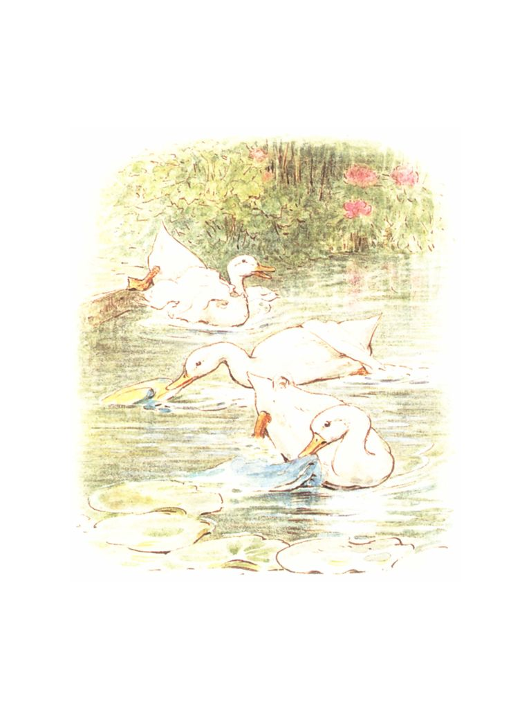

🏠
日
月
縦書き／横書き


| 【対訳】ピーターラビット ④ こねこのトムのおはなし -THE TALE OF TOM KITTEN- | |
| ビアトリクス・ポター | |
あるところに、３匹の仔ねこがいました。名前はミトンにトムにモペットと言いました。
３匹はそれぞれに違ったかわいい毛皮を着ていました。そして玄関の土間のところで転げまわったり、泥だらけになって遊んだりしました。
Once upon a time there were three little kittens, and their names were Mittens, Tom Kitten, and Moppet.
They had dear little fur coats of their own; and they tumbled about the doorstep and played in the dust.
ところがある日、おかあさんねこのタピタ・トウィチットさんがお茶の会にお友達を呼ぶことになりました。そこで、おかあさんはお客さんが来る前にトムたちを洗ってやり、いい服に着替えさせようと思って、うちの中へ連れていきました。
But one day their mother--Mrs. Tabitha Twitchit--expected friends to tea; so she fetched the kittens indoors, to wash and dress them, before the fine company arrived.
まず、お母さんは子どもたちの顔を洗いました。（今、洗ってもらっているのはモペットです。）
First she scrubbed their faces (this one is Moppet).
それから、毛にブラシを掛けました。（今、ブラシをかけてもらっているのはミトンです。）
Then she brushed their fur, (this one is Mittens).
それから、しっぽとひげをくしでとかしました。（今、とかしてもらっているのはトムです。）
トムは大変言うことを聞かない子で、お母さんをひっかきました。
Then she combed their tails and whiskers (this is Tom Kitten).
Tom was very naughty, and he scratched.
おかあさんは、娘のモペットとミトンにはひらひらえりをつけたよそ行きのエプロン服を着せました。それからタンスの引き出しをあけて、美しいきゅうくつな服をたくさん取り出して、息子のトムに着せようとしました。
Mrs. Tabitha dressed Moppet and Mittens in clean pinafores and tuckers; and then she took all sorts of elegant uncomfortable clothes out of a chest of drawers, in order to dress up her son Thomas.
トムはとても太っている上に、前よりもだいぶん大きくなっていました。そこでボタンがいくつか弾けて飛びました。それをおかあさんはまた縫い付けました。
Tom Kitten was very fat, and he had grown; several buttons burst off. His mother sewed them on again.
仔ねこたちの支度がすむとタビタ奥さんはお茶会のごちそうにあたたかいバタートーストを作る間、子どもたちが邪魔をしないように、と外へ追い出しました。
「さあお前たち、服を汚さないようにね！ うしろあしで歩かなくちゃいけませんよ。それから汚いゴミのあるところへは入らないようにして、雌鶏のサリーさんや、豚小屋や、アヒルのパドルダックさんたちのそばには行くんじゃないありませんよ！」
When the three kittens were ready, Mrs. Tabitha unwisely turned them out into the garden, to be out of the way while she made hot buttered toast.
"Now keep your frocks clean, children! You must walk on your hind legs. Keep away from the dirty ash-pit, and from Sally Henny Penny, and from the pig-stye and the Puddle-Ducks."
モペットとミトンは、庭の小道をよろよろしながら歩いていきました。そのうちエプロン服のすそをふんでパタンとうつぶせに転んでしまいました。
起き上がってみると服のあちこちに緑のシミがついてしまっていました。
Moppet and Mittens walked down the garden path unsteadily. Presently they trod upon their pinafores and fell on their noses.
When they stood up there were several green smears!
「築山にのぼって石垣の上にすわっていることにしましょう」とモペットが言いました。
モペットとミトンはエプロン服を後ろ前に着て飛んだり跳ねたりしながら築山をのぼっていきました。そのうちにモペットのきれいなえりが石垣の外の道に落ちてしまいました。
"Let us climb up the rockery, and sit on the garden wall," said Moppet.
They turned their pinafores back to front, and went up with a skip and a jump; Moppet's white tucker fell down into the road.
トムはズボンをはき、うしろあしで立っていたのでとても飛んだり跳ねたりはできません。あたりの草を倒したり、右や左にボタンを落としたりしながら、ちょこちょこ歩きでやっと築山の上までのぼりました。
石垣の上についたときトムはヘトヘトになっていました。
Tom Kitten was quite unable to jump when walking upon his hind legs in trousers. He came up the rockery by degrees, breaking the ferns, and shedding buttons right and left.
He was all in pieces when he reached the top of the wall.
モペットとミトンは何とかトムにかっこうをつけようとしましたが、トムの帽子は石垣の外に落ちてしまうし、残っていたボタンも跳ね飛びました。
Moppet and Mittens tried to pull him together; his hat fell off, and the rest of his buttons burst.
みんなが大変困っていた時、ぴたんぱたん、ぴたんぱたん、という音がして、アヒルのパドルダックさんたちが下の道を１列縦隊でやってきました―――ぴたんぱたん、ぴたんぱたん！
While they were in difficulties, there was a pit pat paddle pat! and the three Puddle-Ducks came along the hard high road, marching one behind the other and doing the goose step--pit pat paddle pat! pit pat waddle pat!
アヒルたちは立ち止まると１列に並んでトムたちを見上げました。アヒルたちの目は大変小さくて、びっくりしたような顔をしていました。
They stopped and stood in a row, and stared up at the kittens. They had very small eyes and looked surprised.
そのうち、メスのアヒルのレベッカとジマイマが、帽子とえりをひろって頭にかぶりました。
Then the two duck-birds, Rebeccah and Jemima Puddle-Duck, picked up the hat and tucker and put them on.
ミトンはあまり笑ったので石垣から落ちてしまいました。モペットとトムもその後から降りていきました。降りる途中で、ミトンたちのエプロン服と、トムの着ていたもの全部が脱げてしまいました。
「さぁ、ドレーク・パドルダックさん、トムに服を着せるのを手伝ってくださいよ」とモペットは言いました。
Mittens laughed so that she fell off the wall. Moppet and Tom descended after her; the pinafores and all the rest of Tom's clothes came off on the way down.
"Come! Mr. Drake Puddle-Duck," said Moppet--"Come and help us to dress him! Come and button up Tom!"
オスのアヒルのドレークさんは、ゆっくりと横歩きのようなかっこうで寄ってきて、落ちていたいろんなものを拾いあげました。
Mr. Drake Puddle-Duck advanced in a slow sideways manner, and picked up the various articles.
そしてドレークさんはそれをみんな自分で着てしまいました！ 服はトムが着た時よりもっと似合いませんでした。
「いいお天気で。ではさようなら」とドレークさんは言いました。
But he put them on _himself!_ They fitted him even worse than Tom Kitten.
"It's a very fine morning!" said Mr. Drake Puddle-Duck.
そして、ドレークさんは奥さんのジマイマとレベッカを連れて、ぴたんぱたん、ぴたんぱたん、と歩調をそろえて行ってしまいました。
And he and Jemima and Rebeccah Puddle-Duck set off up the road, keeping step--pit pat, paddle pat! pit pat, waddle pat!
その時、タビタ奥さんが庭に出てきました。すると子どもたちは何にも着ないで石垣の上にすわっているではありませんか。
Then Tabitha Twitchit came down the garden and found her kittens on the wall with no clothes on.
奥さんは子どもたちを石垣から引きずりおろしてパンとはたいてうちに連れて帰りました。
「もうすぐおかあさんのお友達がいらっしゃるのです。こんな格好ではみっともなくてお客様の前には出せません。おかあさんは恥ずかしく思います」と奥さんは言いました。
She pulled them off the wall, smacked them, and took them back to the house.
"My friends will arrive in a minute, and you are not fit to be seen; I am affronted," said Mrs. Tabitha Twitchit.
「悪いことをした子供はベッドで寝ていなさい」と言って、奥さんはトムたちを2
階へ追い上げてました。そしてお客様には、「子どもははしかで寝ております」と言いました。
奥さんがそんなことを言ったのは残念ですね。だってそれは本当ではありませんもの。
She sent them upstairs; and I am sorry to say she told her friends that they were in bed with the measles; which was not true.
でも子どもたちはベッドで寝てなんかいませんでした。
どういうわけか、お客様たちの頭の上からはものすごい音が聞こえてきました。そして重々しく静かなはずのお茶会の空気は大変かき乱されました。
Quite the contrary; they were not in bed: _not_ in the least.
Somehow there were very extraordinary noises over-head, which disturbed the dignity and repose of the tea party.
いつかきっと、わたしはまた別の本を書いて、こねこのトムのおはなしをあなた方にすることになるだろうと思います。
And I think that some day I shall have to make another, larger, book, to tell you more about Tom Kitten!

さて、あのパドルダックさんたちはどうしたかと言いますと―――あのアヒルたちは池に行って泳ぎました。すると着ていたものはみんなすぐ脱げてしまいました。ボタンが一つもなかったですからね。
As for the Puddle-Ducks--they went into a pond.
The clothes all came off directly, because there were no buttons.
そして、ドレークさんと、奥さんのジマイマやレベッカは、今でもまだあの服を探しています。
おしまい
And Mr. Drake Puddle-Duck, and Jemima and Rebeccah, have been looking for them ever since.
【対訳】ピーターラビットシリーズ ④
こねこのトムのおはなし
－THE TALE OF TOM KITTEN－
発行日 ２０１４年２月５日
著 者 ビアトリクス・ポター
発行者 赤井 仁
発行所 ゴマブックス株式会社
〒１０７－００５２
東京都港区赤坂８－５－40
ペガサス青山７１０
(c) GOMA－BOOKS Co.,ltd. 2014